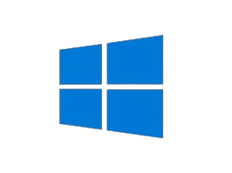
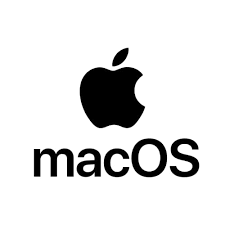

Exemplos de Sistemas Operacionais
Windows
Microsoft Windows é uma família de sistemas operacionais desenvolvidos, comercializados e vendidos pela Microsoft.

MacOS
MacOS é um sistema operativo proprietário desenvolvido e distribuído pela empresa Apple Inc. desde 2001 e destinado exclusivamente aos computadores Mac.

Linux
Linux é um termo popularmente empregado para se referir a sistemas operativos ou sistemas operacionais que utilizam o núcleo Linux.